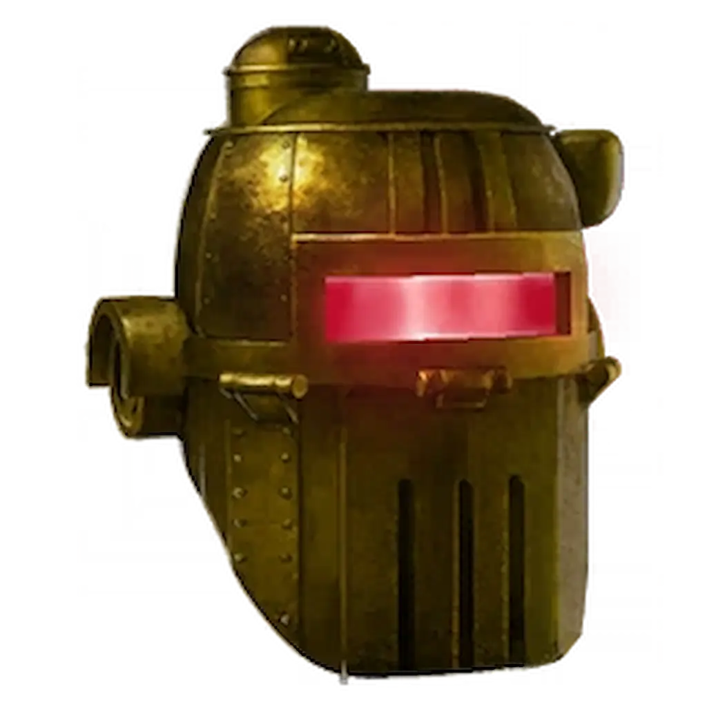
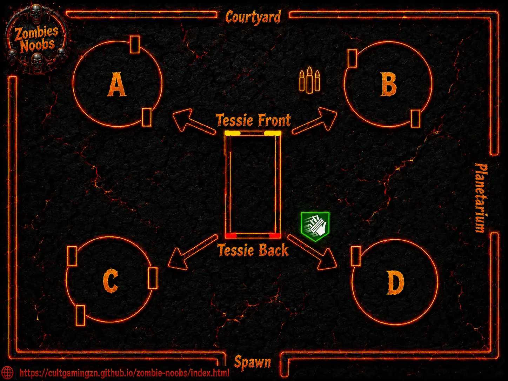

Musisz grać w trybie Klątwa na co najmniej 2. poziomie trudności. Wyzwanie aktywuje się na rundzie 60+

Przed rozpoczęciem wyzwania upewnij się, że spełniasz następujące wymagania:
Tereska zacznie nadawać kod za pomocą swoich świateł. Musisz zapisać lub zapamiętać kolejność, w jakiej migają reflektory i światła hamowania. Każde światło odpowiada konkretnemu żyrandolowi w Museum Infinitum:
PRO TIP: Jeśli przegapisz sekwencję, Tereska mignie wszystkimi światłami i powtórzy ją w nieskończoność, dopóki nie zdobędziesz reliktu.

Wróć na Miejsce Katastrofy. Za miejscem, gdzie spawnuje się Mystery Box (Tajemnicza Skrzynia), otworzy się czerwony portal.